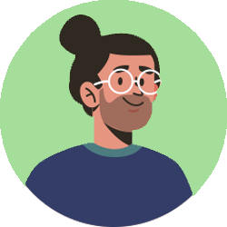

About Me
Introduction
I am a web developer with a passion for technology and enjoy challenging myself to learn new things to expand my skillset, enabling me to adapt throughout my journey as a developer. I have a great sense of responsibility and the ability to maintain and exhibit the traditional values of achieving results.
Experience
I started creating websites as personal projects. I have worked on a number of different websites, with years of experience as a solo developer. Take a look at my portfolio to see what I have done.
PortfolioHobbies
Gaming
I am a big gamer, from AAA to solo indie titles. One of my favourite developers are FromSoftware with BloodBorne being one of my top games of all time.
I wanted to start learning how to make games so I began with Unreal Engine however, I was soon overwhelmed with the amount there was to learn. I learned the basics during my free time and continued until I developed my first small game. It was a platform type, navigating a ball around an obstacle course. It was a huge personal achievement. Since then, I have developed my skills further and worked on a number of different mobile games for charity.
Sport
As a England and Harlequins supporter, my main sport is Rugby. Not much gets me away from technology but, watching the Six Nations is one of the most exciting sporting events. I also enjoy watching the Football World Cup, Summer Olympic Games and the Ashes Cricket.